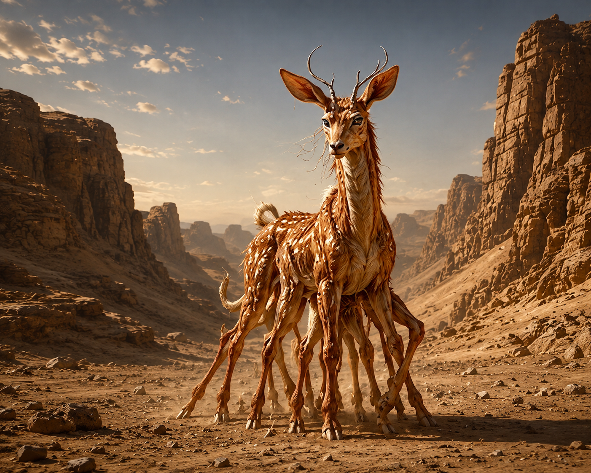
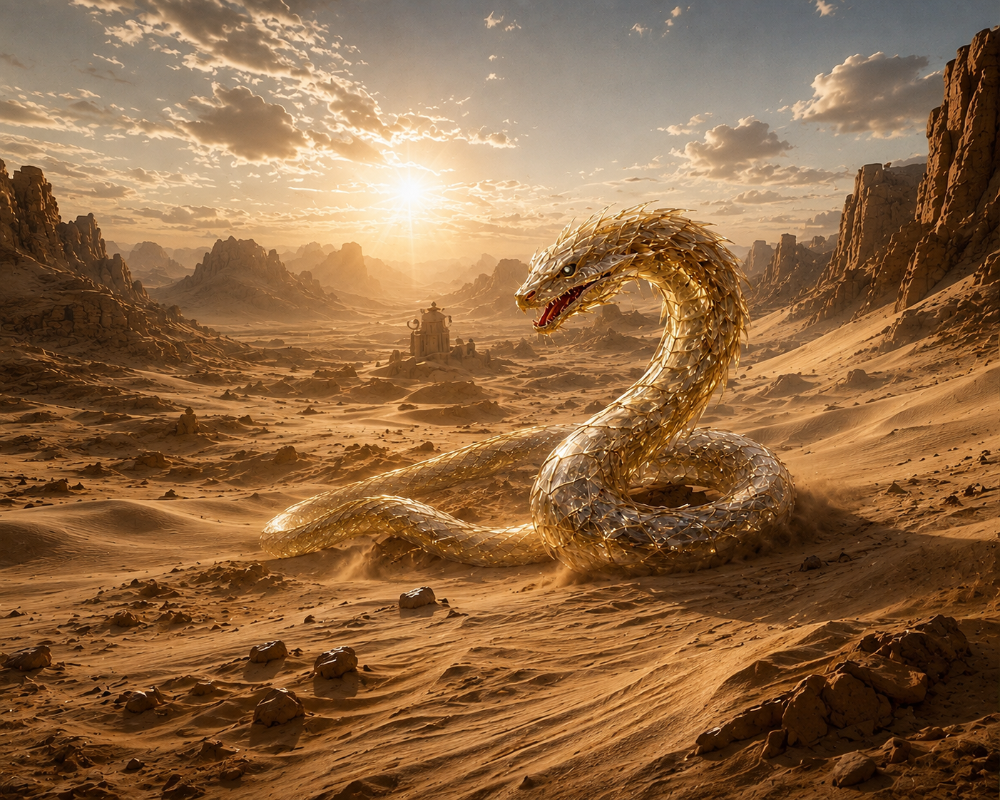
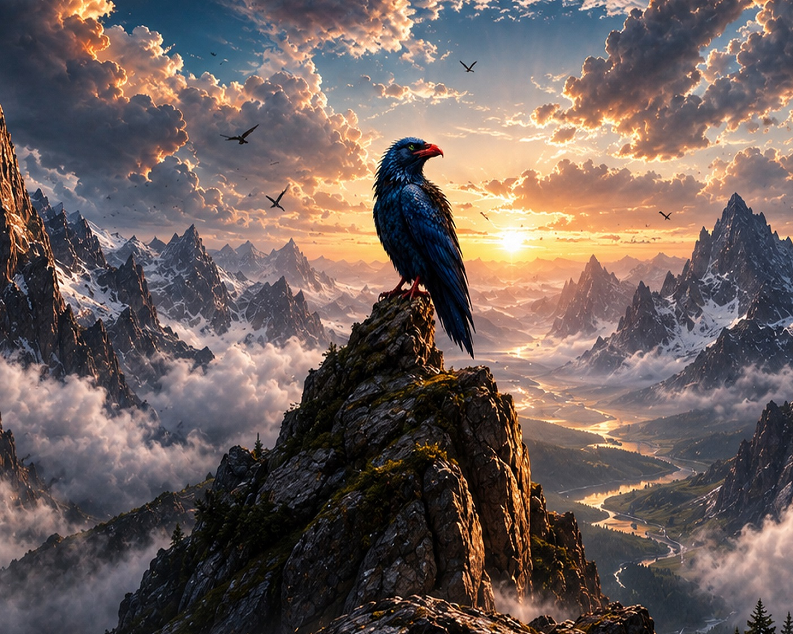
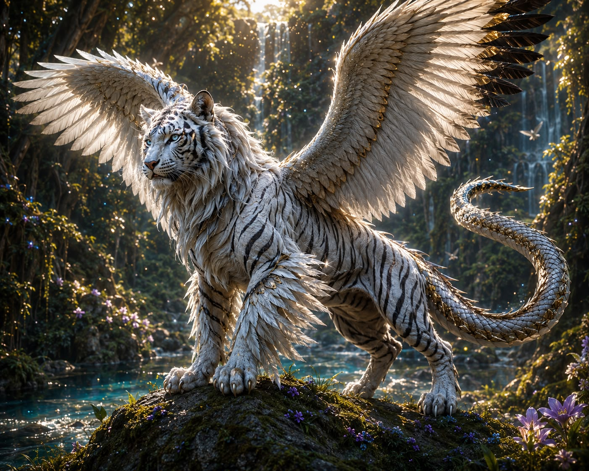
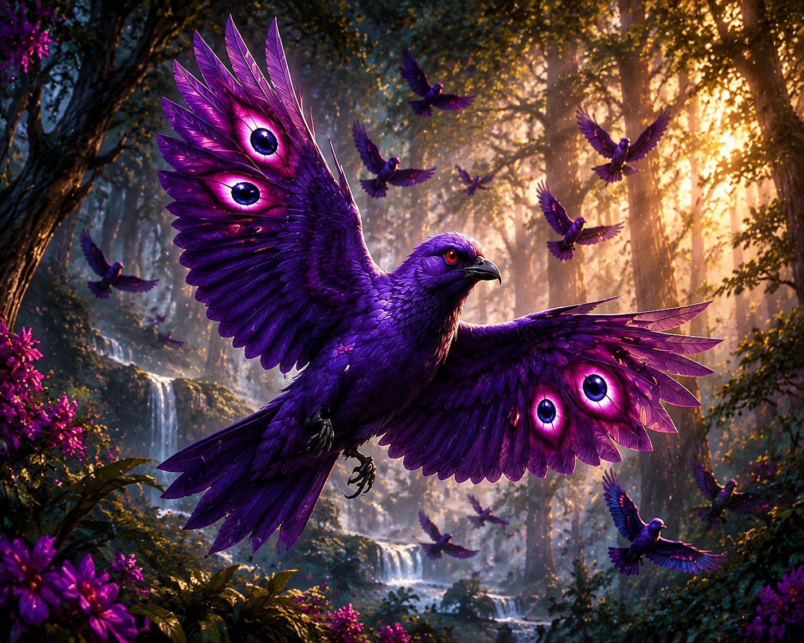
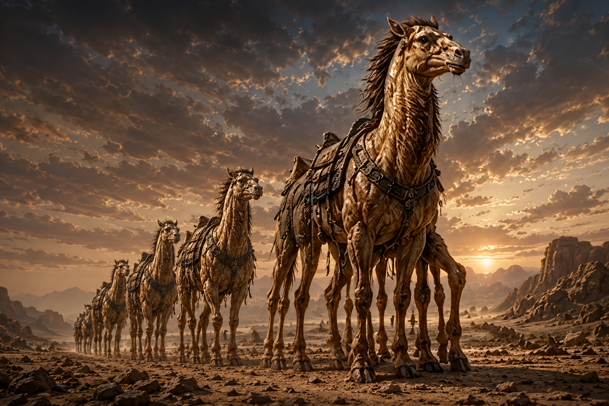
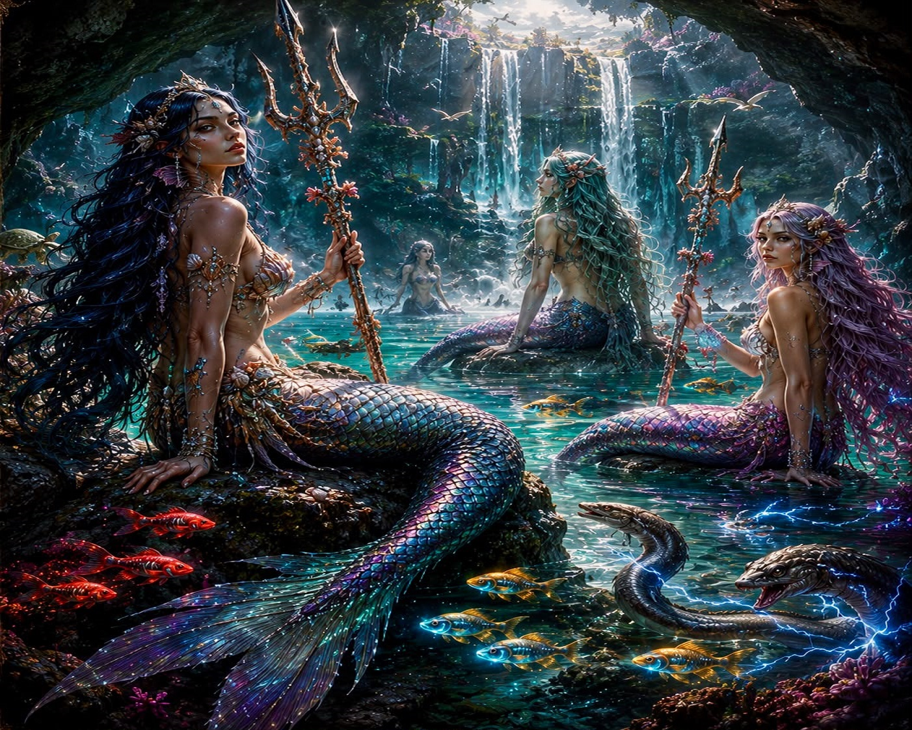

Gargaton
Criatura ancestral. Move-se silenciosamente sob águas calmas.

Gorno
Extremamente rápidos e capazes de atravessar tempestades de areia.

Serpente de Areia
Despertadas pelo deus Solamon são criaturas de cristal dourado e translúcido, cujo interior brilha com luz solar viva.

Tartario
São aves com excelente visão, capaz de avistar movimentos a grandes distâncias.

Fragmo
Corpo de tigre branco, cauda de serpente, asas como águias e olhos como diamantes vivos. A pureza viva de Elyndra.

Azarins
São os guardiões do Sagrado. Conhecidos por sua disciplina absoluta e lealdade eterna. Os guardas celestiais de Morbis.

Moncrudo
Para muitos povos de Elynora, um moncudro observando alguém significa que os espíritos antigos estão atentos.

Uvrus
Aves pequenas e ágeis. Vivem em bandos nas florestas de Elyndra. Símbolo de proteção e astúcia.

Zonkyns
Os caminhantes de Clamis. Mistura de cavalo e camelo, tem grande resistência e capazes de viajar semanas sem descanso.

Sereias
Uma das mais belas criaturas já vista em toda Elyndra. Conhecidas pelo seu canto doce e hipnotizante.